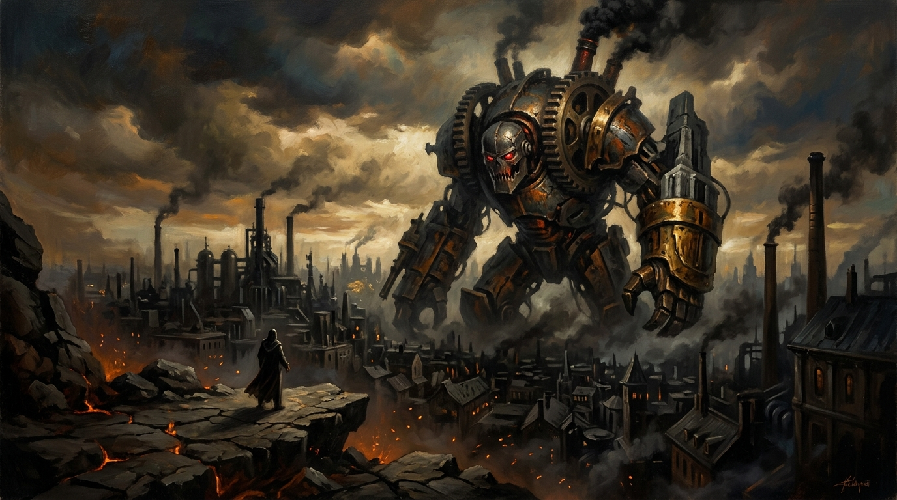

The Iron-Jawed Annihilation of Humanity
A Forensic Indictment of Predatory Capitalism, Ecological Extraction, and Civilizational Cowardice

“Capitalism stands over the world like a titan of greed, its jaws dripping with the stolen lifeblood of generations. It is not a system; it is a predator, a ravenous engine that murders possibility and feasts on the wreckage.” — Trevor Swistchew
The Anatomy of Economic Extraction & Camouflage
Critical Theory & Structural DeconstructionThe Machine of Metabolic Extraction
Capitalism operates not as an equilibrium market of free exchange, but as an asymmetrical metabolic pump. It strips surplus lifeblood from workers and ecologies alike, transforming living soil, oceanic biomes, and human labor into financial abstractions. By casting living communities as combustible fuel, the system ensures that human possibility is subordinated to balance-sheet accumulation.
Capitalism stands over the world like a titan of greed, its jaws dripping with the stolen lifeblood of generations. It is not a system; it is a predator, a ravenous engine that murders possibility and feasts on the wreckage. It shoves its snout into the trough of global wealth, gorging until it chokes, until it swells, until it becomes a grotesque monument to everything humanity should have left with the Dinosaur. It hoards riches with the obscene hunger of a beast that cannot be sated, a beast that devours futures, devours dignity, devours entire nations while billions claw at the dirt for crumbs. Capitalism is the iron fist around humanity’s throat, squeezing, tightening, crushing the last breath out of a species too terrified to resist.
The world is not suffering by accident — it is suffering by design. The machinery of profit does not care about the child starving in the shadow of a luxury skyscraper, nor does it weep for the worker broken on the wheel of an eighty-hour week. It sees them only as fuel, as marrow to be sucked dry and discarded into the dustbin of economic necessity. The soil is poisoned, the oceans are turned to acid, the skies are choked with black venom, yet the masters of capital sit in towers of glass and marble, counting the silver they stripped from the corpse of the Earth. They look upon the ruins of our civilization not with horror, but with the cold, calculating satisfaction of a butcher admiring a slaughterhouse well-cleaned.
Economic theory slithers beside this carnage like a velvet-tongued accomplice, rewriting theft into “efficiency,” disguising murder as “growth,” and blessing the destruction of human life as the unavoidable cost of doing business. It is a lie, a venomous, manufactured myth whispered into the ears of the beaten so they will accept their chains. The economists speak of invisible hands, but the only hand at work is the heavy, brutal claw of capital, dragging humanity toward the slaughterhouse while pretending it is leading us to the promised land.
Millions suffer in silence while the system gorges. The sickness is everywhere: in the vacant eyes of parents who cannot feed their young, in the hollow promises of politicians bought and paid for like cattle, in the slow, grinding death of communities whose only crime was to be unprofitable. We have surrendered the wonders of the human spirit to the ledger book. We have traded the infinite capacity of our imagination for a handful of cheap trinkets, thrown down to us by the very lords who rob us blind.
Humanity is murdered not by fate but by cowardice — the cowardice of comfort, the cowardice of distraction, the cowardice of surrender. We watch the butcher sharpen the blade and convince ourselves it is meant for someone else. We feel the iron jaws closing around our necks and pretend it is a collar we can wear with dignity. But there is no dignity in slaughter, no honor in submission, and no future in a world that feeds its own children to the furnace of greed. If we do not rise, if we do not break the beast, if we do not tear the titan from its throne, then let history record that we did not fall to tragedy; we were murdered by our own silence, devoured by an iron-jawed monster we were too weak to kill.